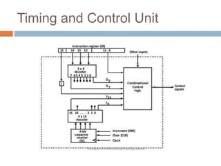

Timing & control unit

We use Timing and Controlling unit in 8085 for the generation of timing signals and the signals to control. All the operations and functions both interior and exterior of a microprocessor are controlled by this unit. X2 and CLK output pins: To do or rather perform the operations of timing in the microcomputer system, we have a generator called clock generator in the CU of 8085. Other than the quartz crystal the complete circuit of the oscillator is within the chip. The two pins namely X1 and X2 are taken out from the chip to give the connection to the crystal externally. We connect a capacitor of 20pF between the terminal X2 and ground just to analyze if the crystal is getting started. The frequency of the crystal is divided by 2 which divides the counter of the unit of control by 2. Internally 8085A works with a frequency of 3 MHz internally with clock frequency. Hence a crystal of frequency of 6-MHz crystal gets connected between X1 and X2. Every operation in the entire 8085 system occurs with the given synchronization process with the clock. There are Peripheral chips like 8251 USART, which does not operate until a small clock signal is in need.
An LC tuned circuit can also be connected between X1 and X2. In some systems carrying low cost, a resistor gets connected between X1 and X2, and the capacitor between X1 and ground for the generations of number of oscillations. Moreover, to get a very good stability we prefer to use quartz crystal. With the internal frequency to be 3 MHz, the period of clock should be 333 ns. Moreover, the 8085 clock strikes once in every 333nS but our watch strikes once in a second. The cycle of the clock of 8085 microprocessor is termed as a T state, where t stands for timing.
The minimum frequency required for the operation of 8085 internally is 500 KHz i.e. 1 MHZ. But the point to be noted that at low frequencies every information from the registers gets lost. It is so since the registers are dynamic in nature and are cells of Random Access Memory, which are to be refreshed in a continuous manner.
Status signals IO/M*, S1 and S0: We require five machines cycles to carry the operation procedure. Specific operations are performed by each machine cycle, like reading and writing from memory. A particular machine cycle needs a fixed cycles of clock, the minimum is three for a particular clock. The call the first clock cycle is as T1 and the second to be T2, here the period of time is T.
The status signals IO/M* describes the type of machine cycle which 8085 microprocessor executes. These status signals get emitted by the 8085 processor during T1 phase of the first machine cycle.